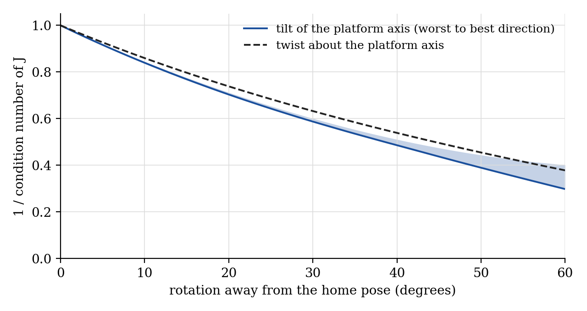
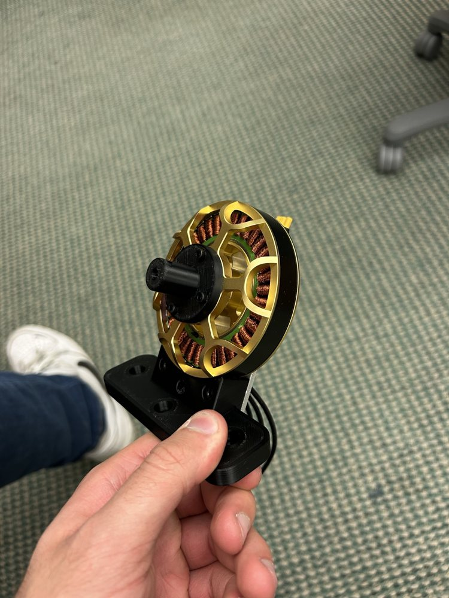
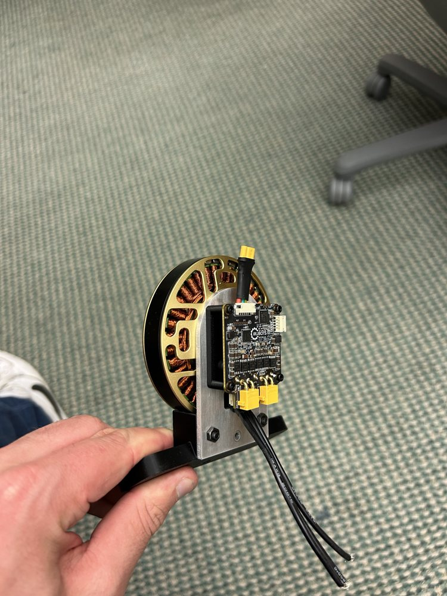
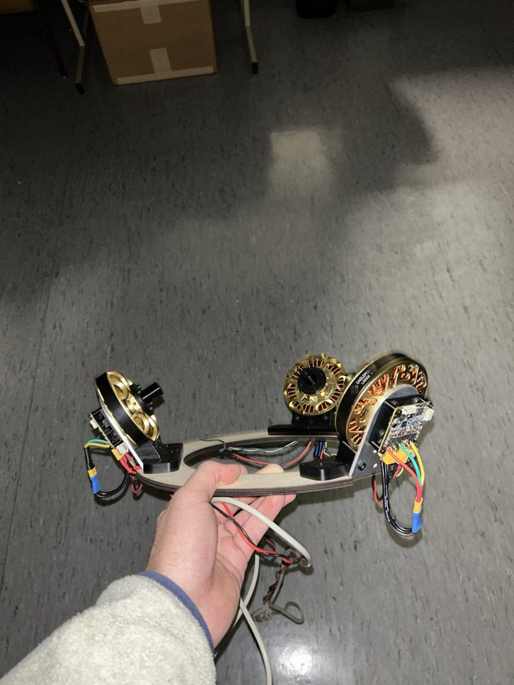
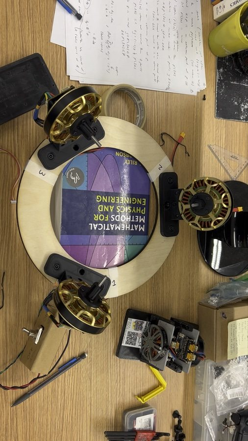

A spherical wrist after the Agile Eye

Before the cable-driven wrists, I try something different for a haptic wrist: a spherical parallel mechanism. The idea comes from the Agile Eye, a camera-pointing mechanism from Clément Gosselin’s lab at Université Laval, and from Skyentific’s video of a stepper-driven version, Now it works! Spherical Parallel Joint.
How it moves
Three motors sit on the base with their axes meeting at one point. Each motor swings a curved link, and a second curved link joins it to the moving platform. All nine joint axes pass through the same centre, so the platform can only rotate about that point, like a motorized ball joint.
That’s what makes it interesting for haptics. Whoever holds the handle feels whatever mass the device moves, and in this layout the motors are bolted to the base and never ride along. Only the links and the platform move.
The kinematics
Label each leg \(i = 1, 2, 3\) with three unit vectors through the centre: \(\mathbf{u}_i\) along the motor axis, \(\mathbf{w}_i\) along the middle joint, and \(\mathbf{v}_i\) along the joint on the platform. The first link fixes the angle \(\alpha_1\) between \(\mathbf{u}_i\) and \(\mathbf{w}_i\), and the second fixes the angle \(\alpha_2\) between \(\mathbf{w}_i\) and \(\mathbf{v}_i\). The Agile Eye uses \(\alpha_1 = \alpha_2 = 90^\circ\), with the three motor axes perpendicular to each other and the three platform axes perpendicular to each other.
Each leg gives one constraint:
\[ \mathbf{w}_i \cdot \mathbf{v}_i = \cos\alpha_2 . \]When motor \(i\) turns at \(\dot\theta_i\), the middle axis swings around it, \(\dot{\mathbf{w}}_i = \dot\theta_i\,(\mathbf{u}_i \times \mathbf{w}_i)\). When the platform turns at angular velocity \(\boldsymbol\omega\), its axis moves as \(\dot{\mathbf{v}}_i = \boldsymbol\omega \times \mathbf{v}_i\). Differentiating the constraint gives
\[ \dot\theta_i\,(\mathbf{u}_i \times \mathbf{w}_i)\cdot\mathbf{v}_i = (\mathbf{w}_i \times \mathbf{v}_i)\cdot\boldsymbol\omega . \]Stacking the three legs gives
\[ A\,\boldsymbol\omega = B\,\dot{\boldsymbol\theta}, \]where
\[ A = \begin{bmatrix} (\mathbf{w}_1 \times \mathbf{v}_1)^{\mathsf T} \\ (\mathbf{w}_2 \times \mathbf{v}_2)^{\mathsf T} \\ (\mathbf{w}_3 \times \mathbf{v}_3)^{\mathsf T} \end{bmatrix}, \] \[ B = \operatorname{diag}\!\big((\mathbf{u}_i \times \mathbf{w}_i)\cdot\mathbf{v}_i\big). \]So the Jacobian from motor speeds to platform angular velocity is \(J = A^{-1}B\), with \(\boldsymbol\omega = J\,\dot{\boldsymbol\theta}\). The mechanism is singular where \(\det A = 0\), when the platform can move with the motors locked, or where \(\det B = 0\), when a motor can turn without moving the platform.
The home pose is isotropic
Take the motor axes as the coordinate axes, \(\mathbf{u}_1 = \mathbf{x}\), \(\mathbf{u}_2 = \mathbf{y}\), \(\mathbf{u}_3 = \mathbf{z}\). With 90° links there’s a pose where each leg’s three axes are mutually perpendicular:
\[ \begin{aligned} (\mathbf{u}_1, \mathbf{w}_1, \mathbf{v}_1) &= (\mathbf{x}, \mathbf{y}, \mathbf{z}), \\ (\mathbf{u}_2, \mathbf{w}_2, \mathbf{v}_2) &= (\mathbf{y}, \mathbf{z}, \mathbf{x}), \\ (\mathbf{u}_3, \mathbf{w}_3, \mathbf{v}_3) &= (\mathbf{z}, \mathbf{x}, \mathbf{y}). \end{aligned} \]Then \(\mathbf{w}_i \times \mathbf{v}_i = \mathbf{u}_i\) and \((\mathbf{u}_i \times \mathbf{w}_i)\cdot\mathbf{v}_i = 1\) for every leg, so \(A = B = I\) and
\[ J = I . \]Each motor turns the platform about its own axis, one to one, with no coupling to the other two. Torque works the same way. By virtual work, the motor torques and the torque on the platform are related by
\[ \boldsymbol\tau_{\text{motors}} = J^{\mathsf T}\,\boldsymbol\tau_{\text{platform}}, \]so at this pose each motor carries exactly the platform torque about its own axis. All three singular values of \(J\) are equal, which is what isotropic means. For a haptic wrist, that means the motors can push back equally hard in every direction.
Away from the home pose
The isotropy only holds at that one pose. To see what happens elsewhere I need the inverse kinematics, which for this geometry has a closed form. Writing the middle axis as \(\mathbf{w}_i(\theta_i) = \cos\theta_i\,\mathbf{w}_{i,0} + \sin\theta_i\,(\mathbf{u}_i \times \mathbf{w}_{i,0})\), where \(\mathbf{w}_{i,0}\) is its home direction, and requiring \(\mathbf{w}_i \cdot \mathbf{v}_i = 0\) gives
\[ \tan\theta_i = -\frac{\mathbf{w}_{i,0}\cdot\mathbf{v}_i}{(\mathbf{u}_i \times \mathbf{w}_{i,0})\cdot\mathbf{v}_i}, \]with two solutions per leg, \(\theta_i\) and \(\theta_i + \pi\). With that I can evaluate \(J\) at any orientation. The plot shows the ratio of its smallest to its largest singular value: 1 at the home pose, falling as the platform tilts or twists away.

Building it
Before adding motors, I try a passive version with my own wrist in it:
From October 2023 to January 2024 I build the motorized version. The base is plywood, the arcs are white plastic, and each of the three motors is a flat brushless motor with a controller board on its back.








Questions or comments? Email me at justin@justinvalentine.ca.